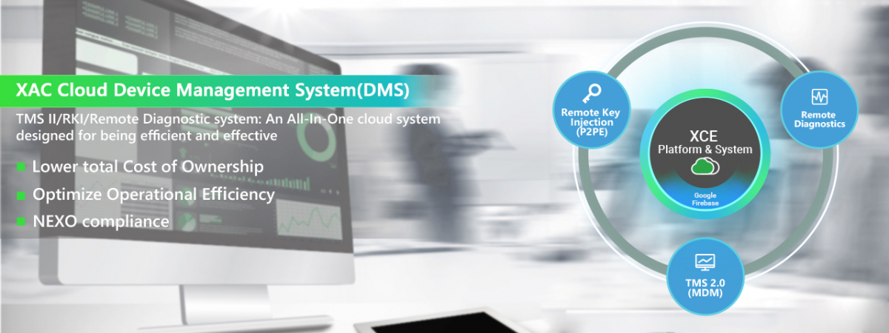

XAC Cloud Device Management System (DMS)

XAC Cloud Device Management System is developed on Google Firebase, which makes it is the ideal for managing Android Devices. Also with P2PE 3.0 certified (PCI-DSS compliant) and also MA/ME Crypto Authentication.
XAC Cloud DMS includes 3 systems (TMS II, Remote Key Injection, Remote Diagnosis). These leverage our proficiency in payment devices and offers a secure, cost-effective system, which is able to optimize operational efficiencies for its secure payment devices and helps lower total cost-of-ownership.
TMS II (MDM)
Full remote and true real time control over your payment devices.
Built on Google cloud, XAC’s TMSII is a true server-less platform that supports multiple devices OS (Android/Windows/Linux/WinCE). The TMS supports Auto-configuration that makes the deployment easier, more systematical, and with lower cost. For further details, please check here.
Remote Key Injection (RKI) System
A total secure solution for inject and manage your keys remotely on your payment devices.
XAC’s RKI system is PCI P2PE 3.0 certified and allows you to inject your keys without a Third Party CA provider, which further ensures the security while lowering the cost.
For further details, please check here.
Remote Diagnostics (Cloud RMA system)
AI help desk that minimize the impact of downtime and real time swap of devices.
With the AI-help desk, the system can automatically diagnosis the device, produce RMA report and notify the warehouse/logistic service for a swap. By leveraging the “delivery service provider” to replace “POS logistic operation providers, ”and speed up the process, lower the impact of downtime with lower operation cost.
For further details, please check here.
Other Value Added Functions
- App Store
- Commerce Gateway System
- Data warehousing and Event Analytics System
- Custom requirements: IoT control or Big Data or other Applications
For further details or customized needs, please feel free to contact marketing@xac.com.tw